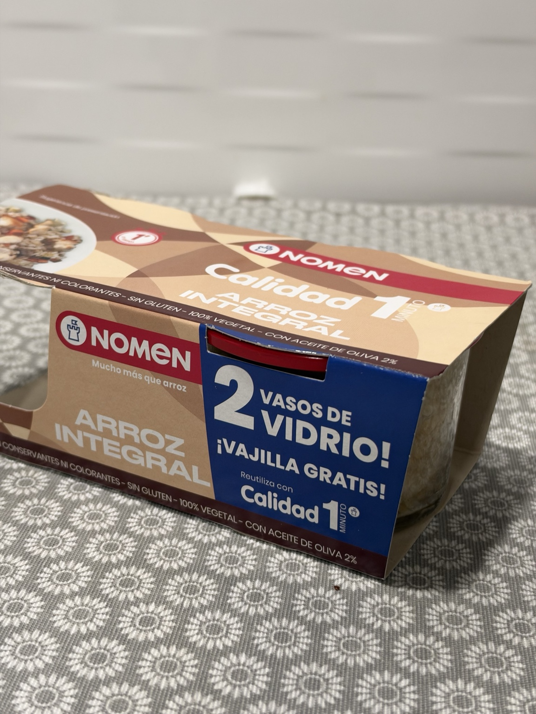
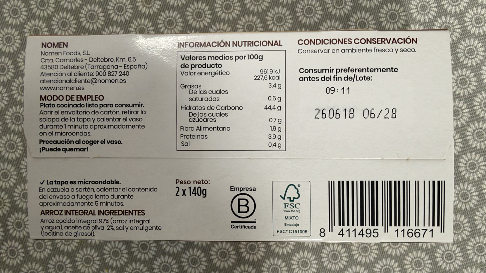

Arroz integral Calidad 1 minuto
Arroz integral cocinado, listo para consumir, en dos vasos de vidrio de 140 g.
Peso neto total: 2 × 140 g. La etiqueta indica que la tapa es microondable y los vasos reutilizables.
Precio de referencia
2,35 € · 8,39 €/kg
Dónde lo compro
Carrefour Los Rosales
30/09/2026
Lo uso en
Por qué lo uso
Lo uso sobre todo en los burritos como sustituto de la quinoa, que a mi madre no le gusta.
En mi cocina
Lo incorporo al relleno de los burritos como alternativa a la quinoa. Está ya cocinado: no se sustituye por el mismo peso de quinoa en seco. La cantidad que uso queda por concretar. Según el envase, se calienta el vaso aproximadamente 1 minuto en el microondas, tras abrir el cartón y retirar la solapa de la tapa; la tapa es microondable. También puede calentarse el contenido en una sartén o cazuela a fuego lento unos 5 minutos. Precaución al coger el vaso: puede quemar.
Composición
arroz cocido integral (arroz integral y agua) (97 %), aceite de oliva (2 %), sal, emulgente (lecitina de girasol).
Conservar en ambiente fresco y seco.
Nomen Foods, S. L., Ctra. Camarles–Deltebre, km 6,5, 43580 Deltebre (Tarragona, España).
Valores por 100 g
| Energía | 961,9 kJ / 227,6 kcal |
|---|---|
| Grasas | 3,4 g |
| De las cuales saturadas | 0,6 g |
| Hidratos de carbono | 44,4 g |
| De los cuales azúcares | 0,7 g |
| Fibra | 1,9 g |
| Proteínas | 3,9 g |
| Sal | 0,4 g |

Valoración de Yuka
78 / 100 · Excelente
La captura presenta todos los aspectos visibles como positivos y redondea la energía a 228 kcal por 100 g. La tabla de esta ficha conserva las 227,6 kcal declaradas en el envase.
Aspectos positivos según Yuka
- Proteínas · 3,9 g por 100 g: Algunas proteínas
- Fibras · 1,9 g por 100 g: Algunas fibras
- Grasas saturadas · 0,6 g por 100 g: Bajo en grasas saturadas
- Azúcar · 0,7 g por 100 g: Bajo en azúcar
- Sal · 0,4 g por 100 g: Bajo en sal
- Valor energético · 228 kcal por 100 g: Impacto bajo
- Aditivos · 1: Ningún aditivo de riesgo
Fuente: captura de Yuka aportada el 16/10/2026.

Ingredientes y tabla nutricional del envase
